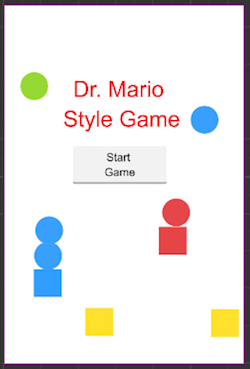
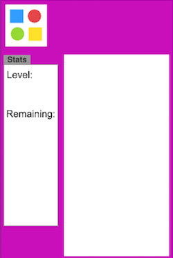
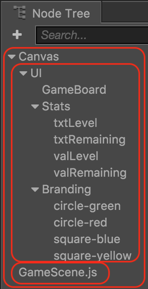

Starting to code!
Now that we have our user interface laid out, we can start coding. Right from the start, there are some initial coding tasks to handle.
How to start playing the game
Remember our Main Scene?

We need to make the Play button work! How do we do that? Remember that we have all the code logic for Main Scene scene in MainScene.js. To make the Play button work we just need a single line of code added to our callback function, modified to be:
callback: function (event) {
cc.director.loadScene('GameScene');
}
Notice that we added a line of code: cc.director.loadScene('GameScene');. This line simple says to load our GameScene. Running this change in a browser shows what happens.
is replaced with 
Starting with core game logic
When the Game Scene loads we need to have many things happen to make our game playable. We need to load a game board, load a sequence of peices that the player will use to solve the puzzle, start some music and more. To get started create GameScene.js in the Assets Panel and drag it directly into the Node Tree. Example:

Doing this will allow GameScene.js to load and run on Game Scene startup. This is exactly what we need to get our game to take shape and start being playable.
Now, let's move on to writing the core logic of the game.
Task: Now is a good time to save your project! From the File menu, select Save Scene or use your operating system's shortcut key.